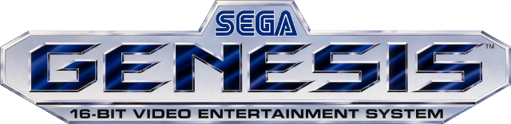
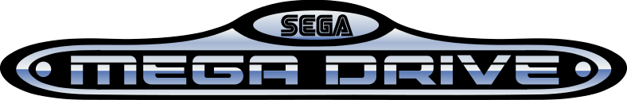
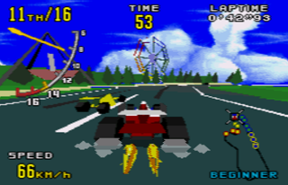
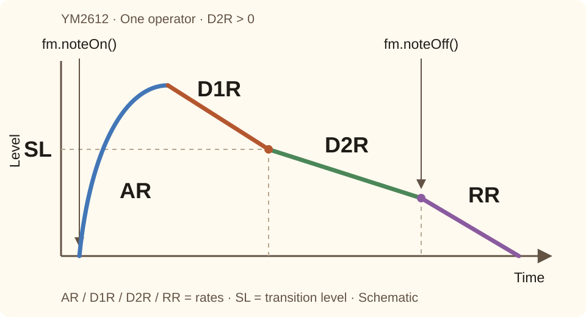

JavaScriptで学ぶメガドライブのYM2612 FM音源
メガドライブには、4オペレーター・6チャンネルのFM音源チップ、YM2612が搭載されています。同時に鳴らせる音は6音しかなく、現代のシンセサイザーと比べると小さな構成です。
しかし、この音源チップから数多くの印象的な音楽や効果音が生み出されてきました。
そのノウハウの多くは、愛好家が作成・保存してきたVGMファイルに今も残っています。VGMを読み解き、再生することで、当時どのようにチップを使い、音を作っていたかを調べられます。
今でも、この4オペレーター・6チャンネルという構成は、FMを学ぶための面白い出発点になります。Tetoricaでは、JavaScriptから直接試せる環境を用意しました。
興味があれば、ぜひ触ってみてください。



入門ページの参考画像として、Genesis / メガドライブのロゴと、FM音源が使われた時代を代表するゲームの画面を掲載しています。
画像の参照元：Sega Genesis - Wikipedia
Hello, YM2612 FM Sound!!
まずはメガドライブの音を聴いてみましょう。Sega Genesis / メガドライブは、YamahaのYM2612音源チップを使っています。
Aaron Gilesによるライブラリーymfmを使うと、そのチップの音をWebブラウザーでも再現できます。
簡単なところから、ド・レ・ミ・ファ・ソ・ラ・シ・ドを鳴らしてみます。
YM2612の世界へようこそ。
FMサウンドの魔法
次はADSRを試すとよいでしょう。Attack（立ち上がり）、Decay（減衰）、Sustain（持続）、Release（離鍵後の減衰）です。弦を弾いた音、ベル、オルガン、ブラス、柔らかくゆっくりした音など、音の印象を作る部分です。
YM2612では、AR、D1R、D2R、SL、RRなどのパラメーターで操作します。立ち上がり、ピーク後の減衰、キーを押し続けている間の後半の減衰、キーオフ後の減衰を制御します。

AR・D1R・D2R・RRは変化の速さ、SLはD1RからD2Rへ切り替わるレベルです。図はD2Rが0より大きい場合の模式図で、実測した時間・音量の目盛りではありません。
ほかにもDT、MULTI、TLなどがあります。まずは小さな音色の例で、コードで「音を設定する」とどのような形になるかを見てみましょう。
1つのオペレーターから始める
YM2612は、各チャンネルの4つのオペレーターを組み合わせて音を作ります。ただ、4つを同時に変更すると、結果を予測しにくくなり、ADSRの感覚もつかみにくくなります。
まずはオペレーターを1つだけ使ってみませんか？
試してみる：1つの音の形を変える
設定を1つずつ変え、Hold to Playを押し続けて聴き比べます。ボタンを離すとリリースを聴けます。再生を止めたいときはStopを使ってください。
- 立ち上がりを変える。OP1で
AR = 31とAR = 12を比較します。鋭い立ち上がりとゆっくりした立ち上がりを聴き、Envelope表示も比べてください。 - リリースを聴く。
AR = 31、D1R = 0、D2R = 0にして、押している間は音が続くようにします。RR = 15とRR = 4を設定し、その都度ボタンを離して比較します。どちらが長く余韻を残すでしょうか？ - 音程と音量を分けて考える。
MULTI = 1とMULTI = 2を比較します。次にMULTI = 1へ戻し、TLを0から32へ上げてください。音程が変わることと、音が小さくなることの違いを聴きます。
数値の読み方：TLは減衰量なので、大きくするほどオペレーターの音は小さくなります。AR、D1R、D2R、RRは秒数ではなく変化の速さで、一般に大きくするほど変化が速くなります。SLは最初の減衰から後半の減衰へ切り替わる音量を設定し、持続時間を指定するものではありません。Envelopeの図は形を理解するための目安で、実測した時間・音量の目盛りではありません。
1つのオペレーターの音とエンベロープを調べたいときは、1 Operator Demoを読み込んでください。
別のページで開く →オペレーター：音を作る基本要素
YM2612の音色は、オペレーターという基本要素の組み合わせで作ります。オペレーターは、独自の音程と音量エンベロープを持ち、デチューンや周波数の倍率で調整できる正弦波の発振器です。単体では素朴なトーンですが、その出力をスピーカーへ直接送る代わりに、別のオペレーターの周波数を変調すると、FM合成ならではの音になります。
YM2612は、6つのチャンネルそれぞれに4つのオペレーターを持ちます。誰が誰を変調し、誰が出力へつながるかという接続をアルゴリズムと呼び、各チャンネルで8種類から選べます。最初に試すならアルゴリズム7が分かりやすいでしょう。4つともキャリアーとして出力へ直接接続し、互いを変調しないので、それぞれの音を聴いてから変調を加えられます。
試してみる：2つのオペレーターをつなぐ
CommonでPlain Dualプリセットを読み込み、Common / OP1 / OP2タブを使ってください。接続ラベルは、デモ内のOP1・OP2という名前で現在の接続を表示します。
- 接続を比べる。
FB = 0でParallelとSerialを切り替え、その都度演奏します。Parallelでは2つの音を混ぜ、SerialではOP1をOP2へ送ります。 - モジュレーターを変える。SerialでOP1のTL、次にMULTIを変えてください。OP1は出力に直接混ざる代わりに、OP2の音を変化させます。Parallelへ戻し、TLの比較を繰り返してみます。
- フィードバックを加える。Serialへ戻り、Commonで
FB = 0、3、6を比較します。オペレーターの設定を変えずに、音の質感がどう変わるかを聴きます。
フィードバックは、OP1の出力の一部を自身へ戻します。FBの値がその強さを制御し、0で無効になります。音への影響はオペレーターの設定と接続によって変わるため、両方のモードで比べてみてください。
キャリアーとモジュレーターの働きを直接比べたいときは、2 Operator Demoを読み込んでください。
別のページで開く →8種類のアルゴリズムを聴き比べる
同じ4オペレーターの音色を8通りにつなぎます。変えるのはアルゴリズムだけです。ボタンを押して、1つのキャリアーに多くのオペレーターを送る接続（ALGO 0など）の金属的で複雑な音と、複数のオペレーターを並列に出力する接続（ALGO 7など）の素朴なトーンを重ねたような音を比べてください。
ボタンを押すと音源を読み込み、再生します。
より多くの操作項目で同じ考え方を試したいときは、Synthアプリ全体を読み込んでください。
別のページで開く →Analyzerで実際の音を調べる
ここまでは手書きのパラメーターを使いました。FM2612 VGM Analyzerでは、逆に実際のVGM記録を読み込み、ゲームがチップへ送ったレジスター書き込みを調べます。解析したコマンドとYM2612の6チャンネルをリアルタイムに確認し、現在のオペレーター・アルゴリズム設定をスナップショットやTFI音色としてエクスポートできます。
実際のメガドライブ / Genesisのゲーム音楽のVGMは、vgmrips.net、zophar.net、smspower.orgなどにあります。project2612.orgの保存版と、まとめたアーカイブのProject 2612 Complete Archive（2018-06-23、681セット）、Project 2612 Complete Archive（2021-07-12、704セット）も参照できます。
試してみる：音から設定へたどる
- 音を見つける。VGM / VGZを読み込んで再生し、発音するチャンネルを確認します。調べたい音の途中で一時停止してください。
- 構成を調べる。そのチャンネルのアルゴリズム、オペレーターのレベル、エンベロープのパラメーターを見ます。出力へつながるオペレーターと、別のオペレーターを変調するものを見分けます。
- 音色作りへ戻す。Export Snapshot TFIを押してダウンロードを展開し、対象チャンネルのTFIファイルを選びます。SynthのTFIファイル入力で読み込み、音符を鳴らし、パラメーターを1つ変えて元の音と比べます。
音色ファイルが保存するのは、ある瞬間の設定です。元の演奏では音程、レベル、その他のレジスターも時間とともに変わることがあるため、TFIだけでフレーズ全体を再現できるとは限りません。
実際のVGMファイルやレジスターの変化を調べ、音色を抽出したいときはAnalyzerを読み込んでください。
別のページで開く →ソフトウェアはどうチップを操作するのか
実際のチップには8-bitのデータバスと2本のアドレス選択ピン（A0、A1）があり、パラメーターの変更は、レジスターのアドレスを選ぶ書き込みと、値を書き込む操作の2段階です。ymfmとこのリポジトリーのJavaScript層は、読みやすいメソッド呼び出しでこの操作をまとめていますが、その下では同じパターンを使います。
0x30-0x3c— オペレーターごとのデチューンと周波数倍率0x40-0x4c— オペレーターごとのトータルレベル（音量）0x50-0x5c/0x80-0x8c— オペレーターごとのエンベロープのレート（アタック、サステイン、リリース）0xa0/0xa4— チャンネルごとの周波数0xb0— チャンネルごとのアルゴリズムとフィードバック0x28— 音符を開始・終了するキーオン／キーオフ
YM2612 Basicsでは、レジスターマップとピン配置、1つのビープ音を鳴らすための具体的なバイト列を詳しく説明しています。
続けて読む
JavaScriptで学ぶメガドライブのSega PSG →
Game Boy：パルス波の幅を変えて、音と波形を聴き比べる →
Game Boy：Envelopeの音量変化を聴く → ／ 32点のWaveを編集する →
音源チップからビープ音まで：JavaScriptでYM2612のレジスターを操作する →
編集できるPlaygroundの例で、周波数の比率、純正な長3度、等しい音程幅、小数の音程を試せます。
トップページへ戻るFX入門（作成中）
Playgroundで音を聴き、PCMを加工するコードを書いて学ぶシリーズです。GainからReverb・組み合わせまで全15章の下書きを、FXの目次から読めます。